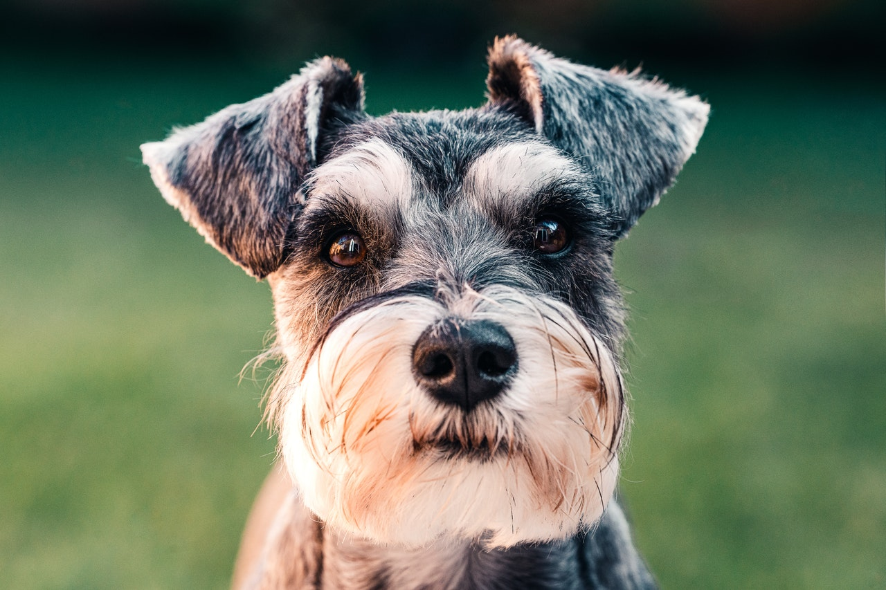

Preparing to welcome your new puppy
-
Purchase the items in the shopping list below. It's best to have too much than too
little.
-
Puppy proof your home. Remove any toxic plants and hide away any cables or other
dangerous items a puppy with brand new teeth could chew. Also remove any small items
they could swallow.
-
Set up your puppies sleeping area. If you are using a crate, consider covering all but
one side with a sheet to give it more of a den feel creating a safe space for your new
family member. Add lots of cushions and blankets inside to make it extra comfy
-
Choose a reputable veterinary practice near you and book a first appointment. Remember
to bring with you the certificate of purchase and breeder documents as you will be asked
for these by the vet.
-
Secure your garden. Make sure that there are no places your dog can escape is left
unsupervised.
-
Check the route from the breeder to your home and work out where you will stop for
toilet breaks along the way.
- Set the ground rules such as where the dog will be allowed to go, and whether they will
be allowed on the sofa.
- Get a good night sleep; there’s a good chance you won’t get much sleep the first night
you have the puppy.